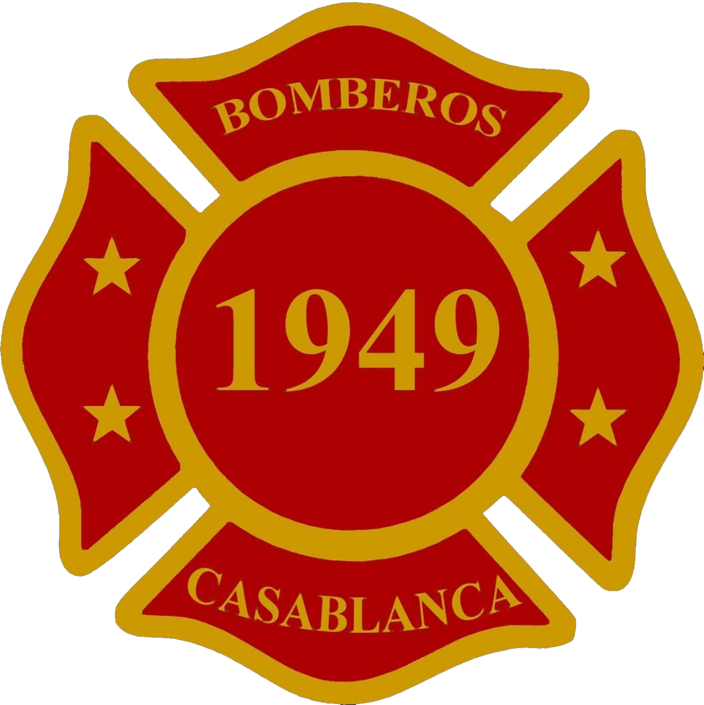

Al servicio de Casablanca desde 1949
77 años protegiendo a nuestra comunidad con vocación, disciplina y entrega voluntaria. Conoce nuestra historia y nuestras compañías.
Información Institucional
Datos generales del Cuerpo de Bomberos de Casablanca
- Cuerpo de Bomberos
- Casablanca
- Fecha de Fundación
- 22 de abril de 1949
- Unidades
- 6 (4 Compañías y 2 Brigadas)
- Superintendente
- Gastón Marcelo Mercado Oyarzún
- Comandante
- Juan José Valladares Gómez
- Comunas Atendidas
- Casablanca
- Dirección
- Alejandro Galaz 320, Sector El Molino, Casablanca
- Teléfono
- (32) 2742366
¿Qué Hacemos?
Áreas generales de servicio de un Cuerpo de Bomberos en Chile.
[PENDIENTE: confirmar qué especialidades/equipos tiene realmente el Cuerpo de Casablanca]
Incendios Estructurales
Combate de incendios en viviendas, comercios e industrias.
Incendios Forestales
Control de incendios forestales y de pastizales en la comuna. El Cuerpo también aporta al Grupo Forestal (EBF), integrado por bomberos de las 4 compañías, que en julio de 2025 logró la Acreditación Forestal nivel mediano de Bomberos de Chile (Grupo Técnico Operacional, código FT2-09) y apoya campañas de incendios forestales fuera de Casablanca.
Rescate Vehicular
Atención de accidentes de tránsito y rescate de personas atrapadas.
Materiales Peligrosos
Respuesta ante derrames y emergencias con sustancias peligrosas.
Apoyo en Emergencias
Colaboración en catástrofes, rescates y otras emergencias comunales.
Nuestras Compañías
Al servicio de la comuna de Casablanca
El Cuerpo de Bomberos de Casablanca está conformado por 4 compañías y las Brigadas Las Dichas y Lagunillas. Conoce el detalle de cada una